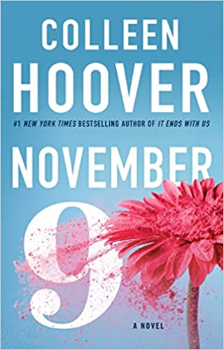
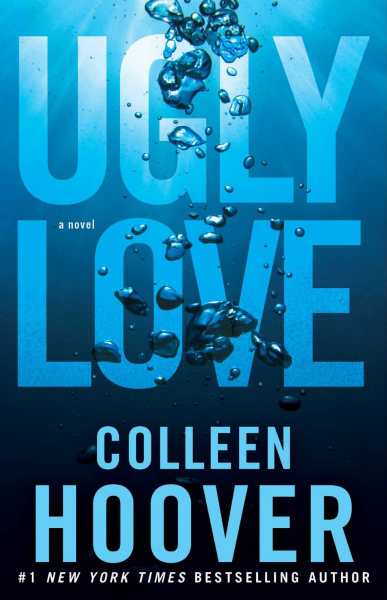
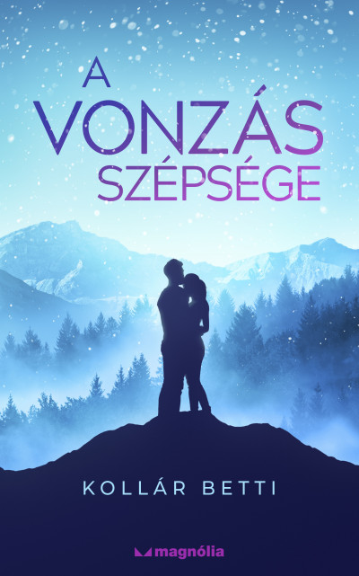
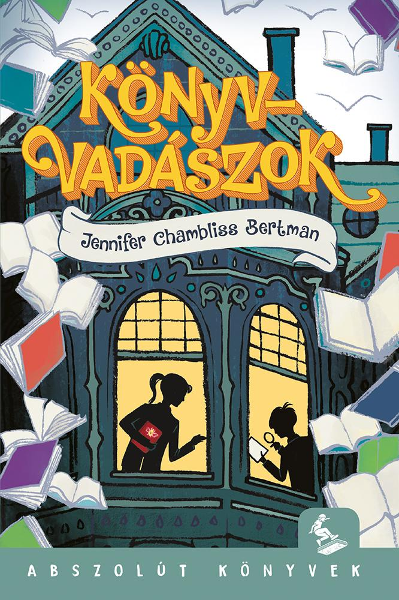
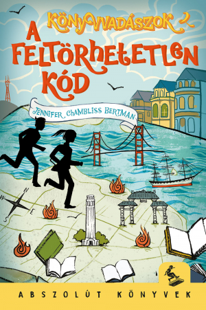

Serének így egyszerre kell szembenéznie a múltjában történt eseményekkel és a fiú iránt érzett egyre növekvő vonzalmával, nem beszélve Rhettről, Ace gúnyos és hűvös legjobb barátjáról, aki a jelek szerint mindig rosszkor van jó helyen. Bár Ace roppant vonzó, úgy tűnik, Serének ez önmagában mégsem elég. Vajon Ace végig csak elcsábítani akarja a lányt, vagy Sere el tudja érni, hogy szép lassan megváltozzon mellette?
Colleen Hoover
November 9.

Fülszöveg:
Egyszer volt, hol nem volt, volt egyszer egy fiú, aki találkozott egy lánnyal.
A Lánnyal.
Fallon megismerkedik Bennel, az ígéretes regényíróval - egy nappal azelőtt, hogy az ország másik felére költözik. A szerencsétlenül időzített vonzalmuk a lány eseménydús életével együtt megadja azt az ihletet, amire Ben mindig is vágyott a regényéhez. Telik-múlik az idő, párhuzamosan futó életükben jönnek-mennek a kapcsolatok és a csalódások, de továbbra is találkoznak évente egyszer, mindig ugyanazon a napon. Egészen addig, ameddig Fallon el nem bizonytalanodik, hogy Ben vajon igazat mond-e neki, vagy csak tökéletes valóságot kreál a regényéhez az ütős konfliktus kedvéért.
Lehet-e egyáltalán szerelmi történetnek nevezni Ben kapcsolatát Fallonnal - és egyúttal a regényét is -, ha szívfájdalommal végződik?
Saját vélemény:
Ezt a könyvet kevesebb mint egy nap alatt olvastam ki, teljesen magával ragadott. Azt hittem az egész történet rendkívül klisés lesz, de az írónőnek sikerült újra és újra meglepnie. Talán nem túlzok, ha azt mondom ez a könyv tartalmazza a legnagyobb fordulatot, amit romantikus könyvben valaha olvastam. És bár Fallon (könyvünk főhőse) döntéseivel sok esetben nem értettem egyet így is élveztem a könyvet. Ez a könyv különleges dátummá tette november 9.-ét.
Ugly Love - Csúf szerelem

Fülszöveg:
Ha meg akarod szegni a szabályokat, készülj fel rá, hogy összetörik a szíved.
Amikor Tate Collins találkozik Miles Archer pilótával, tudja, hogy ez nem szerelem első látásra, sőt, még barátságnak is kevés. Az egyetlen, ami összeköti őket, a tagadhatatlan, kölcsönös fizikai vonzalom. Amikor a vágyaik felszínre törnek, rájönnek, hogy tökéletes párt alkotnak. A férfi nem akar szerelmet, a nőnek pedig nincs ideje rá, így nem marad más, csak a szex. A kapcsolatuk meglepően jól működik, amíg Tate betartja Miles két szabályát:
- Ne kérdezz a múltról!
- Ne várj semmit a jövőtől!
Eleinte úgy tűnik, tudják kezelni a helyzetet, de aztán gyorsan ráébrednek, hogy semmi sem olyan egyszerű, mint hitték.
- A szív érzelmekkel telik meg.
- Az ígéretet megszegik,
- A szabályok összekuszálódnak.
- A szerelem csúf fordulatot vesz.
Az őszinte szerelem, a testi vágy és titokzatos múlt örök harcának története.
Saját vélemény:
spoiler alert, ha át szeretnéd ugrani ezt a rész katt
ide
Ez volt első CoHo könyvem, az igazat megvallva nem volt tervben az olvasása, de egyik csapattársam miatt le
kellett töltenem így végül úgy döntöttem miért is ne. Azóta sem bánom, hogy ezt a döntést hoztam. A
történetet két szemszögből íródott, mely néha elég zavaró tud lenni, de megszokható. A könyv Tate + Miles,
valamint Rachel storyját mutatja be. És bár imádtam a könyvet így vissza nézve és végig gondolva Miles
inkább terapeutaként tekint Tatere és sokkal jobban szerette Rachelt. A záró jelenet elégé megutáltatta
velem Milest, bármekkora traumája is volt az, hogy a saját gyermekedre nem bírsz ránézni számomra
elfogadhatatlan. Mindentől függeltlenül melegen ajánlom ezt a könyvet minden tininek.
Kollár Betti
A vonzás törvénye

Serenity édesanyjával egy távoli városba költözik, hogy maguk mögött hagyjanak egy múltbéli tragédiát. A
lány a helyi egyetemen folytatja tovább a tanulmányait, és már a beiratkozás napján megismerkedik
Ace-szel,
aki a kar közismert szívtiprójának hírében áll. Ace rögtön meglátja a kihívást Serében, a lány azonban
nem
dől be a fiú vonzerejének. Hogy lerázza, alkut ajánl neki: ha Ace egy hónapig mellőzi a többi lányt,
megkaphatja őt egy éjszakára.
Saját vélemény:
Ez a könyv valami fantasztikus! Egyedi, izgalmas és könnyű teljesen beleélni magunkat a storyba. Mindenkinek ajánlom, aki valami kis könnyű, romantikusat szeretne olvasni, nem túl kiszámítható befejezéssel! Van benne egy kis romantikusság mégsem csöpögős, hanem humoros. Imádtam minden percét. Kedvenc idézetem:
„Nem tudom miféle összeesküvés elméleteket gyártottál már le magadban, de nem
rabszolgatartó-rabszolga
viszonyban vagyunk” -Rhett
A vonzás szépsége

Sere és Ace alkuja ugyan felbomlott, de ez nem jelenti azt, hogy Sere végre megszabadult a
nehézségektől.
Még
nem tette túl magát Ace-en, ráadásul újabban zavarban érzi magát Rhett előtt. Változóban vannak a
dolgok:
Ace mintha már más szándékkal közeledne felé, mint korábban, Rhett pedig egyre nyitottabb és
barátságosabb.
Sere lassan ráébred, hogy szerelmes, de egy vadonatúj kihívással kell szembenéznie, mégpedig azzal, hogy milyen is párkapcsolatban élni. Végre rálel a saját társaságára, és úgy érzi, tartozik valahova, valakihez. Ám nem mindenki az, akinek mondja magát. Meg kell birkóznia saját bizonytalanságával és a kaliforniai élete miatti rossz érzéseivel is. Rég történt eseményekre derül fény, fájdalmas érzések törnek felszínre, de ezúttal már Serén múlik, hogy egyedül néz-e velük szembe.
Vajon sikerül rátalálnia önmagára és a problémák ellenére is kitartania amellett, akit szeret?
Fülszöveg:
Saját vélemény:
Nem is tudom mit mondjak. Ez a könyv A vonzás törvénye folytatása. A véleményem a második könyvekről általában az, hogy elrontják az elsőt, de itt ez egyáltalán nem történt meg. Még az sem rontotta el, hogy előre elolvastam az utolsó oldalt. Tetszett, hogy rögtön ott folytatódott, ahol az előző abbamaradt, ezért kicsit sem volt nehéz belerázódni a történetbe. Rhettet nagyon megkedveltem már az első könyvben, és ahogy haladt a történet, egyre jobban megkedveltem. Ha egy pörgős, aranyos történetre vágysz, ezt semmiképpen ne hagyd ki!
Jennifer Chambliss Bertman
Könyvvadászok

Fülszöveg:
Emily bohém szüleinek mániája, hogy minden évben új helyre költöznek. Most éppen San Francisco következik, ami legalább jó hír, hiszen itt van a Könyvvadászat központja. Emily lelkes könyvvadász: a játék lényege, hogy bárki bárhol elrejthet egy könyvet, a megtaláló pedig egy online rendszer alapján pontokat kap.
Amikor Emily a városba érkezik, a Könyvvadászat kitalálóját, aki éppen egy új játék bejelentésére készül, megtámadják. Ijedtében elrejti a nála lévő, teljesen egyedi kiadású könyvet. Emily újdonsült barátjával véletlenül bukkan a könyvre, és a csapat a könyvvadászaton keresztül nyomozni kezd. Az értékes könyvre azonban másoknak is fáj a foga, így indul a versenyfutás. Vajon kinek sikerül előbb megfejtenie a rejtvényeket?
Saját vélemény:
Elsősorban a borító miatt figyeltem fel erre a könyvre, gondolván, hogy ilyen milyen színes. Miután a fülszöveget olvastam úgy voltam vele, hogy biztosan csak jó lehet a regény. És tényleg az. Izgalmas a történet, érdekes a játék, a szereplők meg olyan megnyerő alakok, akikről jó olvasni és könnyű a szemszögükbe helyezni magunk. James és Emily olyan tizenegynehány éves diák, aki szereti a fejtörő kihívásokat, szeret olvasni, könyvtárba és könyvesboltba járni. Imádtam az összes fejtörőt és játékot. Kicsit szomorú vagyok hogy a valóságban nem létezik ez a játék, talán egyszer majd tényleg lesz egy Garrison Griswold aki elkészíti nekünk ezt a játékot.
Könyvvadászok 2. - A feltörhetetlen kód

Fülszöveg:
Emily szülei végül úgy döntöttek, hogy a család San Franciscóban marad, így Emily és új barátja, James tovább folytathatják a könyvvadászatot. De minden megváltozik, miután megszereznek egy kódolt üzenetet, amit a tanáruknak, Mr. Quislingnek címeztek. A két gyerekben felébred a kíváncsiság, és nekilátnak, hogy kiderítsék, mi köze van a Niantic nevű hajónak, a rejtélyes tűzeseteknek, a Mark Twain köteteknek és Mr. Quislingnek a titokzatos, feltörhetetlen kódhoz. A Pagony legújabb sorozatába, az Abszolút Könyvekbe olyan 9-12 éveseknek szóló, olvasmányos és izgalmas könyveket válogatunk, amelyek abszolút lendületesek, abszolút színvonalasak, abszolút maiak. Abszolút könnyű őket olvasni, de mégsem felszínesek, abszolút nem megterhelőek, de mégis elgondolkodtatók. Van és lesz köztük magyar és külföldi, fantasy, kaland vagy éppen detektívregény - ami mindegyikben közös, és amit garantálunk: ezeket a könyveket jó olvasni!
Saját vélemény:
Nagyon féltem, hogy milyen lehet ez a könyv az első után, de kellemesen csalódtam. Ez a rész még egy krimi cselekményszállal is bővül: a piromániás Főnix jelenik meg rögtön az első oldalakon. Kicsit féltettem is szereplőinket a megjelenése után. A könyv során rengeteg új ismeretet szerezhetünk Mark Twainről és San Franciscoról. Az írónőnek sikerült nagyon pontosan leírnia a várost, így az olvasó (jelen esetben én) a könyv végére úgy érezte mintha ő is jelen lenne. Már várom a folytatást.